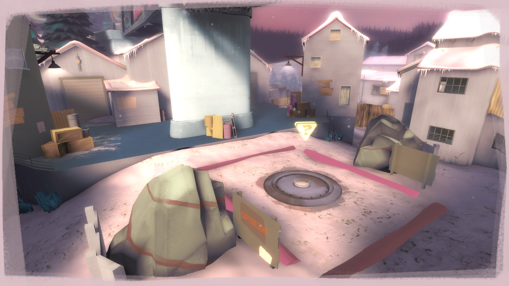

Behold! Huge tracks of Land!
Pyroland is a vast kingdom that reaches as far as can see!! And it's also fully protrayed in all of Team Fortress 2!!
...Er, well...
It reaches as far as *the map extends, and it is only displayed in *9 of TF2's map pool.
Here's a quick table of the maps Pyrovision will apear on, other maps will still have some pyroland effects, such as raising voice pitch, silly gibs and particle effects, and string lights on ropes, but will be lacking the distinctive texture replacements.
| 2Fort | |
| Badlands (Arena) (Control Point) (King of the Hill) |
|
| Badwater Baisn | |
| Doomsday | |
| Dustbowl | |
| Gold Rush | |
 |
Gravel Pit |
| Hightower | |
|  | Viaduct |